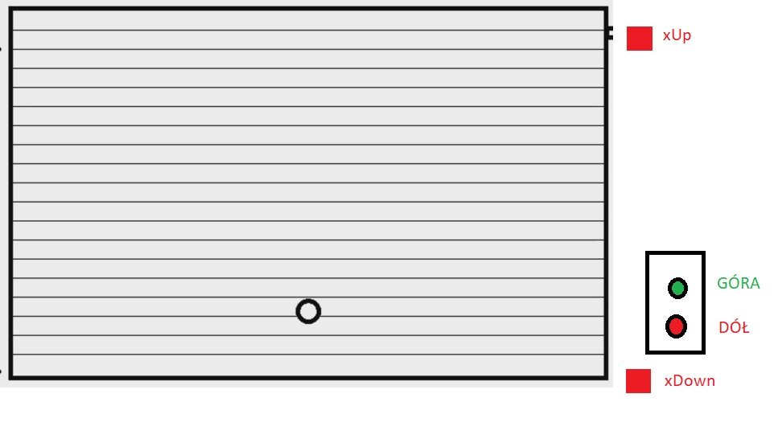
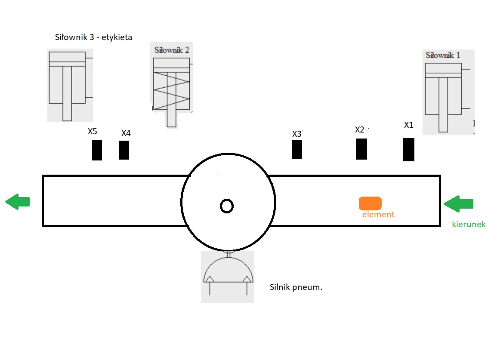

Brama garażowa
Przykładowy projekt bramy garażowej, który pozwala na jej zamykanie i otwieranie. Po wciśnięciu przycisku zielonego brama podnosi się, jeśli nie znajduje się w maksymalnym położeniu (xUP), z kolei czerwony przycisk powoduje jej opadanie do momentu, gdy akttywowany zostanie czujnik dolny (xDown).
Linia produkcyjna
Zadaniem linii jest ustawienie elementu w zadanej pozycji i naklejenie na niego etykiety za pomocą siłownika. Czujnik X0 zlicza do 2 i zamyka siłownik nr 1. Jeśli czujnik X2 wykryje obiekt, to po przekroczeniu czujnika X3, po 2 sekundach zostanie uruchomiony silnik pneumatyczny, który obróci element. Czujnik nr 4 spowoduje, że po 2 sekundach wysunięty zostanie siłownik etykietujący. Czujnik nr 5 powoduje wysunięcie siłownika nr 1 - otworzenie linii dla kolejnego elementu.
